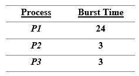
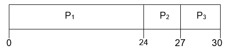
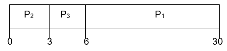
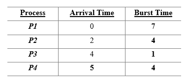
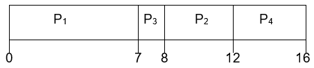
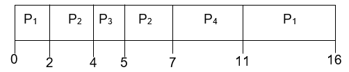
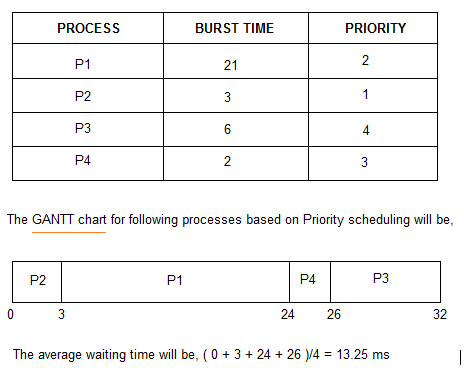
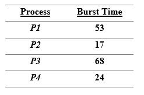
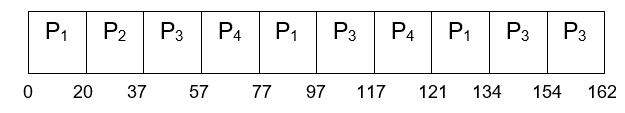
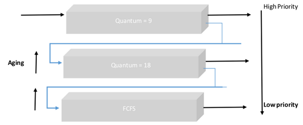

Scheduling Examples
The first lab here goes through examples of some of the Scheduling techniques that are used in modern operating systems to complement the notes.
The next lab asks some questions for you to consider, having gone through and understood the purposes of and algorithms of the techniques in the notes.
There are some solutions to these problems in the following lab

Using FCFS, the Gantt Chart for the schedule is:

Average turn-around time = (24+27+30)/3=27
Suppose the processes had arrived in the order P2, P3, P1. Then we would have the Gantt chart with FCFS:

Average turn-around time = (3+6+30)/3=13
The average waiting time is much less than in the first case, which demonstrates a classic convoy effect where all the other processes are waiting for one long process to finish using the CPU.
This results in lower CPU and device utilisation
Example #2 shows that higher utilisation might be possible if the shortest processes were allowed to run first.

Using SJN, we would have the following Gantt chart:

Using SRT, we would have the following Gantt chart:

Average waiting time = (9 + 1 + 0 +2)/4 = 3

Suppose that 4 processes arrive at time 0, with the following CPU burst times:

Using RR with a time quantum of 20, we would have the following Gantt chart:

Typically there will be higher average turnaround time than SJN but better response time.
Let’s consider there are three queues Q1, Q2 and Q3.
Q1 Time quantum 9ms
Q2 Time quantum 18ms
Q3 FCFS
Processes in Q3 are run on an FCFS basis, only when Q1 and Q2 are empty.
A technique called Aging promotes lower priority process to the next higher priority queue after a suitable interval of time.
The incoming processes are short and there is no need for the processes to execute in a specific order.The processes are a mix of long and short processes and the task will only be completed if all the processes are executed successfully in a given time.The processes are a mix of user based and kernel based processes.The incoming processes are short and there is no need for the processes to execute in a specific order.In this case, FCFS works best when compared to SJF and RR because the processes are short which means that no process will wait for a longer time. When each process is executed one by one, every process will be executed eventually.
The processes are a mix of long and short processes and the task will only be completed if all the processes are executed successfully in a given time.Round Robin scheduling works efficiently here because it does not cause starvation and also gives equal time quantum for each process.
The processes are a mix of user based and kernel based processes.Priority based scheduling works efficiently in this case because generally kernel based processes have higher priority when compared to user based processes.
For example, the scheduler itself is a kernel based process, it should run first so that it can schedule other processes